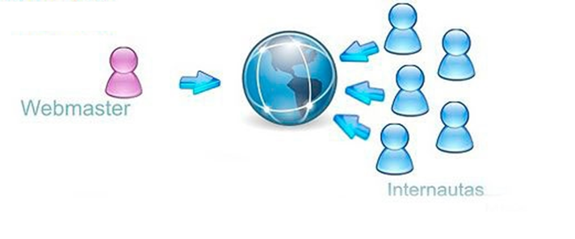
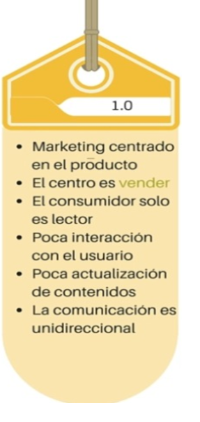
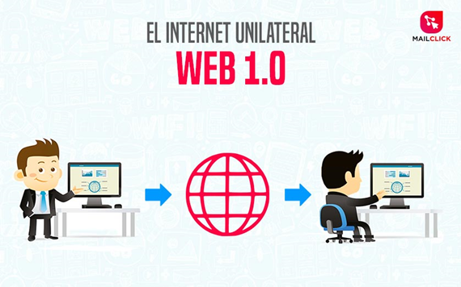

WEB 1.0 - Caracteristicas principales
Contenido estático y unidireccional
Sitios no interactivos
Se utilizaban tablas y frames para alinear los elementos de la pagina

Impacto de estrategias de marketing
 
This is a section